1 理解GC日志1.1 重要的垃圾收集数据1.2 开启GC日志输出1.3 MinorGC日志1.4 FullGC日志1.5 CMS老年代GC日志1.6 补充2 JConsole2.1 启动2.2 连接jvm应用2.3 连接成功2.4 内存监控2.5 线程监控 2.6 类加载监控2.7 VM概要2.8 MBean监控3 VisualVM3.1 启动3.2 概述3.3 监控3.4 线程详情监测3.5 抽样器3.6 性能分析4 jatack
HotSpot VM可以将每次GC的数据直接输出成日志，可以以文本方式查看GC统计数据，或者用GUI监控工具查看。
开启 –XX:+PrintGCDetails 可以打印出GC日志，默认是打印在console控制台。
使用 –Xloggc:filename 可以将GC日志直接输出到文件，filename为目标文件名称。
使用 –XX:+PrintGCTimeStamps 可以在GC日志中输出自jvm启动依赖到垃圾收集之间流逝的秒数，可以通过这个时间戳来统计GC频率。
使用 –XX:+PrintGCDateStamps 可以在GC日志中输出标准格式的年月日时分秒形式的时间戳，也可以根据此时间戳来统计GC频率。
为了便于注释说明，将日志作了分行处理 。
原始日志
1: 76.282:2: [GC (Allocation Failure)3: [PSYoungGen: 554568K->35404K(573440K)]4: 610676K->93743K(641024K), 0.0260886 secs]5: [Times: user=0.06 sys=0.01, real=0.03 secs]
日志说明
第1行
开启了–XX:+PrintGCTimeStamps后的时间戳。
第2行
GC表示是MinorGC。
第3行
PSYoungGen表示新生代使用的是Parallel Scavenge收集器。(如果是ParNew，表示使用的是Parallel收集器； 如果是DefNew，表示使用的是Serial收集器)
“->”左侧554568K是垃圾收集前新生代的占用量，右侧35404K是垃圾收集后新生代的占用量，因为MinorGC后Eden为空，所以35404K也代表GC后被占用的那一块Survivor的占用量。
括号中的573440K是Eden和一块被占用的Survivor的和。
第4行
“->”左侧610676K是垃圾收集前java堆的占用量，右侧93743K是垃圾收集后java堆的占用量。
括号中的641024K是java堆的总量。
0.0260886 secs是执行垃圾回收花费的时间。
第5行
user是垃圾收集执行非操作系统调用指令所耗费的cpu时间。
sys是垃圾收集执行操作系统调用指令所耗费的cpu时间。
real是垃圾收集的实际时间。
为了便于注释说明，将日志作了分行处理。
原始日志:
xxxxxxxxxx1: 2784.826:2: [Full GC (System.gc())3: [PSYoungGen: 672K->0K(558080K)]4: [ParOldGen: 44257K->38446K(90112K)]5: 44929K->38446K(648192K),6: [Metaspace: 61626K->61360K(1103872K)], 0.2257245 secs]7: [Times: user=0.84 sys=0.00, real=0.23 secs]
日志说明
第1行
开启了–XX:+PrintGCTimeStamps后的时间戳。
第2行
Full GC,直接标明了GC类型(System.gc()) 表示是通过程序中显式调用System.gc()触发的FullGC，如果是由jvm自动触发，则没有此参数。
第3行
和上面MinorGC中的含义相同，不再赘述。
第4行
ParOldGen说明老年代使用了Parallel Old收集器。
“->”左侧44257K是垃圾回收前老年代的使用量，右侧38446K是垃圾收集后老年代的使用量。
括号中的90112K是老年代的大小。
第5行
44929K->38446K(648192K)是java堆的使用情况，同MinorGC中含义相同，不在赘述。
第6行
Metaspace表示元数据区，此日志是java8的jvm生成，因为java8中HotSpot删除了永久代，取而代之的是元数据区。
“->”左侧的61626K是垃圾收集前元数据区的使用量，右侧的61360K是垃圾收集后元数据区的使用量。
括号中的1103872K是元数据区大小。
0.2257245 secs是此次FullGC花费的时间。
第7行
含义和MinorGC中相同，不再赘述。
FullGC中值得关注的是垃圾收集之前老年代和元数据区的占用量，因为当两者的占用接近其容量时，都会触发FullFC。
当 –XX:+UseConcMarkSweepGC 使用CMS收集器时，会自动开启 –XX:+UserParNewGC。CMS在老年代的GC日志与上面的FullGC日志有很大的不同.
原始日志:
x1: 7.879: [GC (CMS Initial Mark) [1 CMS-initial-mark: 37262K(87424K)] 42307K(126720K), 0.0009025 secs][Times: user=0.00 sys=0.00, real=0.00 secs]2: 7.880: [CMS-concurrent-mark-start]3: 7.905: [CMS-concurrent-mark: 0.023/0.025 secs] [Times: user=0.06 sys=0.00, real=0.02 secs]4: 7.905: [CMS-concurrent-preclean-start]5: 7.905: [CMS-concurrent-preclean: 0.001/0.001 secs] [Times: user=0.00 sys=0.00, real=0.00 secs]6: 7.905: [CMS-concurrent-abortable-preclean-start]7: 7.986: [GC (Allocation Failure) 7.986: [ParNew: 38926K->4352K(39296K), 0.0067288 secs] 76189K->43991K(126720K), 0.0067888 secs][Times: user=0.00 sys=0.00, real=0.01 secs]8: 8.102: [GC (Allocation Failure) 8.102: [ParNew8.120: [CMS-concurrent-abortable-preclean: 0.034/0.214 secs][Times: user=0.33 sys=0.02, real=0.22 secs]: 39296K->876K(39296K), 0.0335647 secs] 78935K->40751K(126720K), 0.0336238 secs] [Times: user=0.13 sys=0.00, real=0.03 secs]9: 8.136: [GC (CMS Final Remark) [YG occupancy: 1569 K (39296 K)]8.136: [Rescan (parallel) , 0.0026637 secs]8.139: [weak refs processing, 0.0004099 secs]8.139: [class unloading, 0.0049642 secs]8.144: [scrub symbol table, 0.0053784 secs]8.149: [scrub string table, 0.0006631 secs][1 CMS-remark: 39874K(87424K)] 41443K(126720K), 0.0144267 secs][Times: user=0.02 sys=0.00, real=0.01 secs]10: 8.150: [CMS-concurrent-sweep-start]11: 8.161: [CMS-concurrent-sweep: 0.010/0.011 secs] [Times: user=0.03 sys=0.02, real=0.01 secs]12: 8.161: [CMS-concurrent-reset-start]13: 8.162: [CMS-concurrent-reset: 0.001/0.001 secs] [Times: user=0.00 sys=0.00, real=0.00 secs]
日志说明:
CMS Initial Mark说明开始初始标记，此时会停顿所有java线程， 37262K是当前java堆的使用量， 87424K是java堆的总量，因为这段gc日志是在我的程序启动过程中的，所以看到后面还有42307K(126720K)，说明在启动过程中，java堆内存在扩大。76189K->43991K(126720K)可以看出在CMS并发清除前，这次MonorGC后，java堆的使用量为43991K。CMS-remark: 39874K(87424K)] 41443K(126720K)中可以看出当前java堆总量为126720K，使用量为41443K。
注意CMS并发清除开始和结束时的MinorGC，如果java堆的占用几乎没有怎么降低，很少有对象被回收，说明该轮CMS垃圾收集周期几乎没有找到垃圾对象而只是在浪费cpu，或者对象以不小于CMS并行清除垃圾对象的速度被提升到老年代。这两种情况都说明jvm需要调优，具体的调优请看后面专门的章节，此章节主要讲解如何理解GC日志。
如果对象提升到老年代的速度太快，而CMS收集器不能保持足够多的可用空间时，就会导致老年代的运行空间不足，这成为并发模式失败。当老年代碎片化达到某种程度，使得没有足够空间容纳新提升的对象时，也会引发并发模式失败。 当出现并发模式失败时，CMS的GC日志会有”concurrent mode failure”。发生并发模式失败时，老年代将以STW的方式进行垃圾收集，并且整理压缩碎片。
作为一般性准则，并发垃圾收集的开销应该小于10%，也有可能达到1-3%。
使用 –XX:+PrintGCApplicationConcurrentTime 和 –XX:+PrintGCApplicationStoppedTime，jvm可以报告应用在安全点操作之间的运行时间，以及阻塞java线程的时间。
利用这俩个选项观察安全点操作有助于理解和量化延迟对jvm的影响，也可以用来辨别jvm安全点操作还是应用程序引入的延迟。
一段日志示例:
xxxxxxxxxx8.752: Application time: 0.1273273 seconds //此处延迟由MinorGC造成8.752: [GC (Allocation Failure) 8.752: [ParNew: 38435K->433K(39296K), 0.0020703 secs] 73597K->35763K(126720K), 0.0021173 secs][Times: user=0.00 sys=0.00, real=0.00 secs]8.754: Total time for which application threads were stopped: 0.0022436 seconds, Stopping threads took: 0.0000156 seconds8.754: Application time: 0.0001583 seconds //此处延迟由应用本身引入8.754: Total time for which application threads were stopped: 0.0001487 seconds, Stopping threads took: 0.0000837 seconds
通过命令行选项 -XX:+DisableExplicitGC 可以禁用System.gc()。
JConsole是一款随jdk发布的图形化jvm监控工具。
在jdk安装目录的bin目录中可以找到jconsole，如下图：
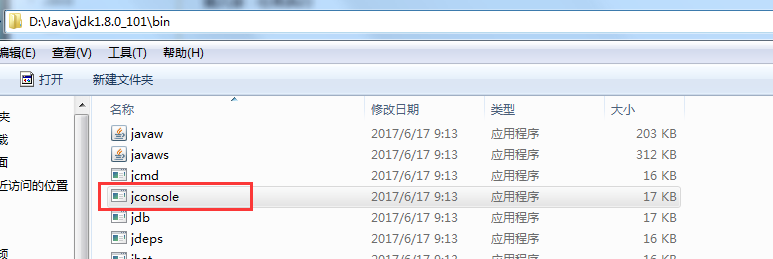
在windows操作系统中，可以直接双击打开，也可以通过命令行打开。
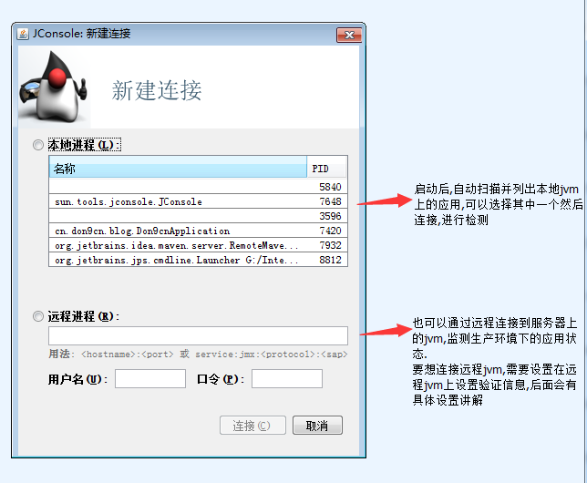
我们选择上图中pid为7420的应用，点击连接。
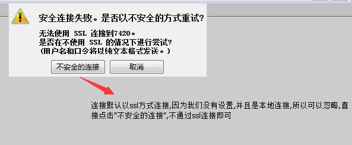
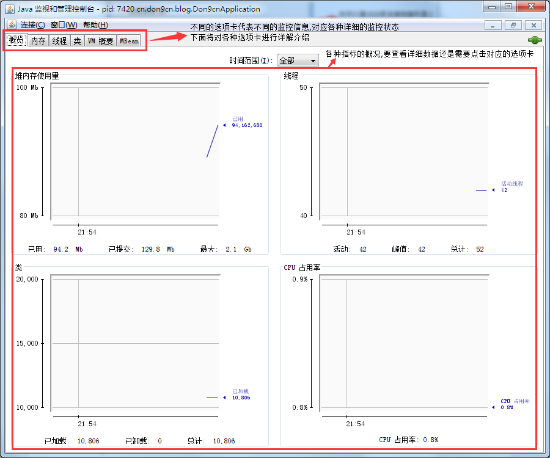
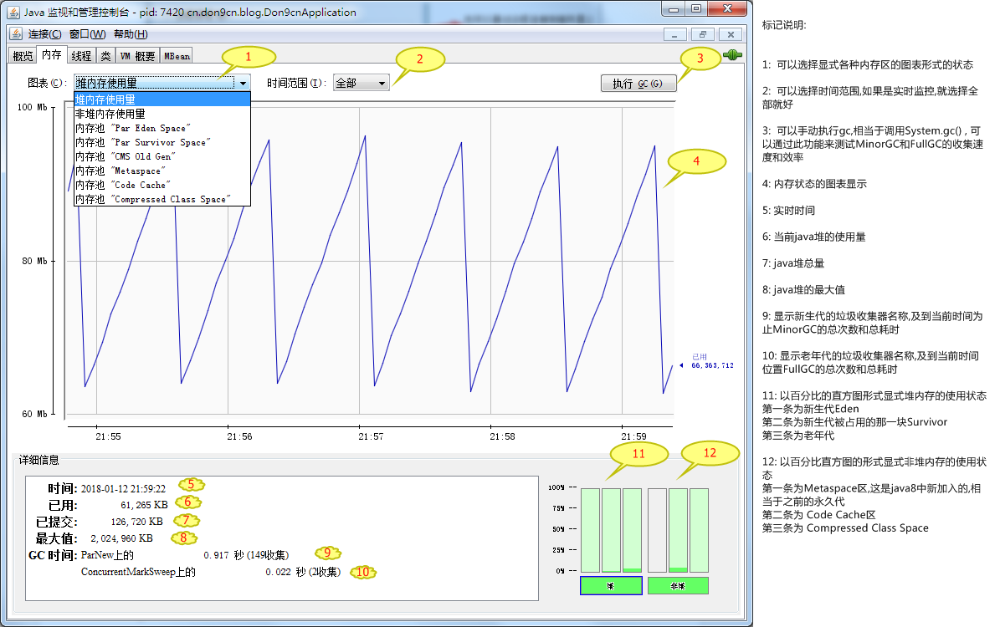
补充：监控时可以留意一下Survivor是否长时间处于满状态，如果是，说明Survivor已经溢出，对象在老化之前就被提升到老年代，对新生代调优可以解决该问题。
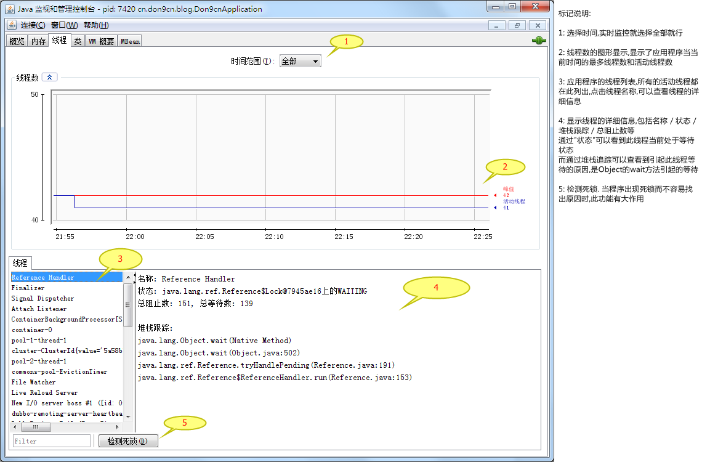
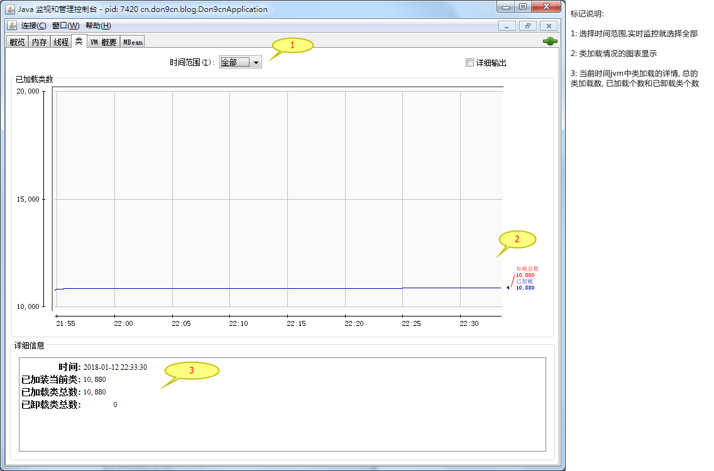
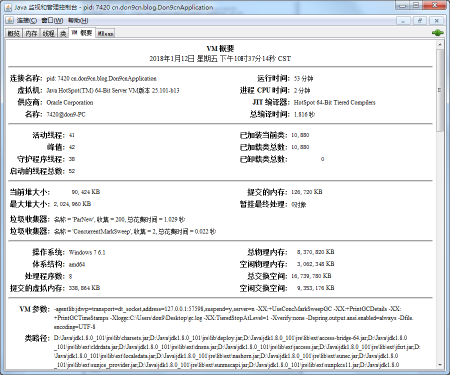
以文本形式显式当前时间jvm中各项监控指标的数据
此界面列出了所有MBean，可以点击相应的MBean查看属性状态 。
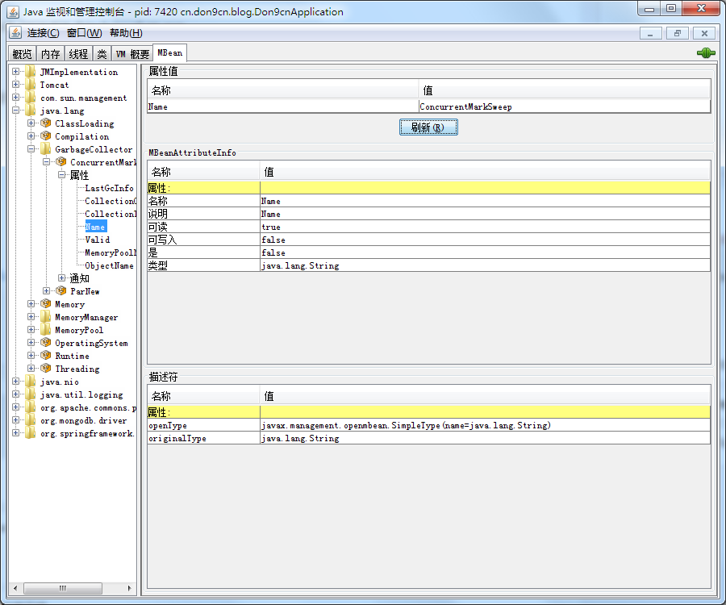
VisualVM也是一款随jdk发布的图形化监测工具。
在jdk安装目录的bin目录中,可以找到jvisualvm,如下图: 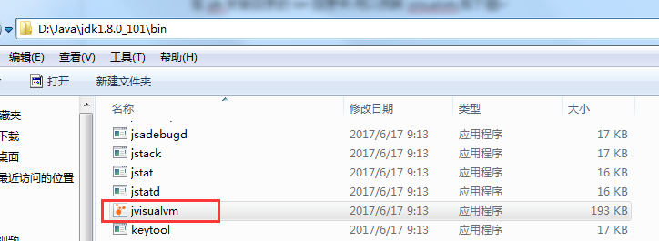 在windows操作系统中,可以直接双击运行,也可以通过命令行运行
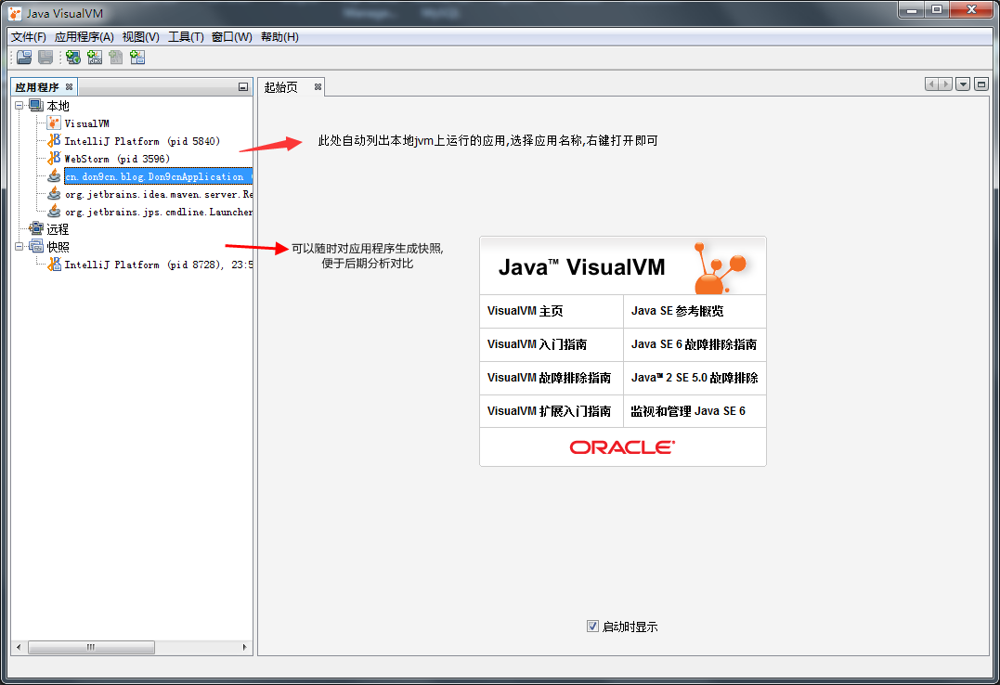
应用打开后，自动进入概述页面，此页面以文本形式列出了当前应用的一些基础信息。 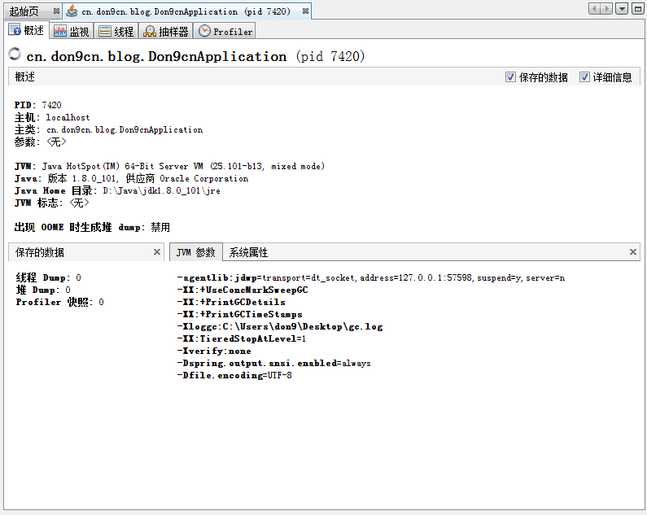
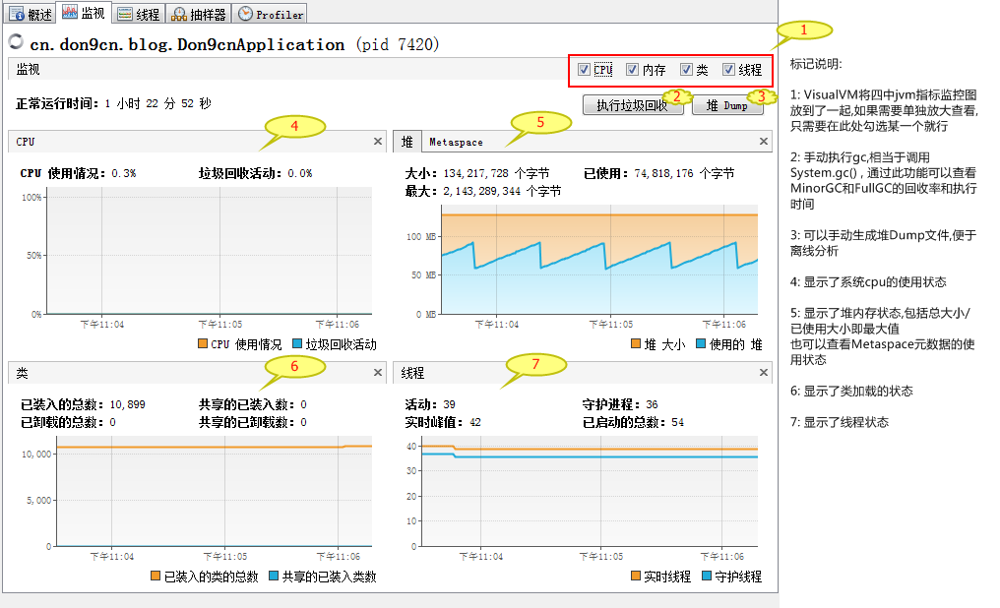 VisualVM默认将四个jvm监控指标放在了一起，每个指标的监控图与JConsole相比，没有JConsole数据详细，但是图形化要比JConsole更加直观。
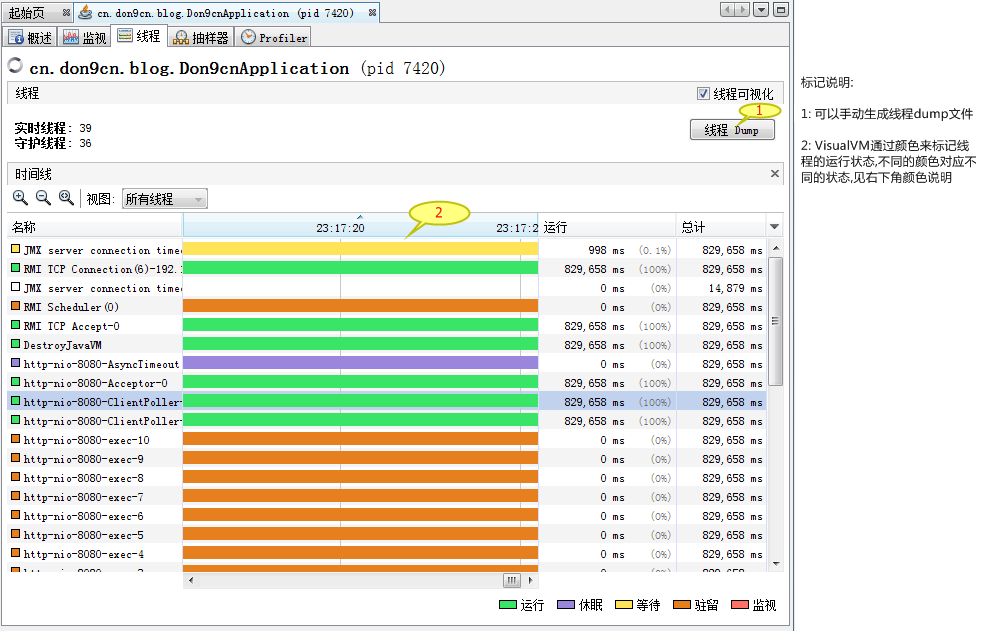 VisualVM通过不同的颜色标记线程状态，相比JConsole，更加直观，但是却没有了JConsole中的堆栈追踪信息，在分析线程等待原因及死锁上不如JConsole。
可以随时对cpu和内存进行抽样，后期出现问题时可以通过对不同时间点的抽样数据来查找原因。 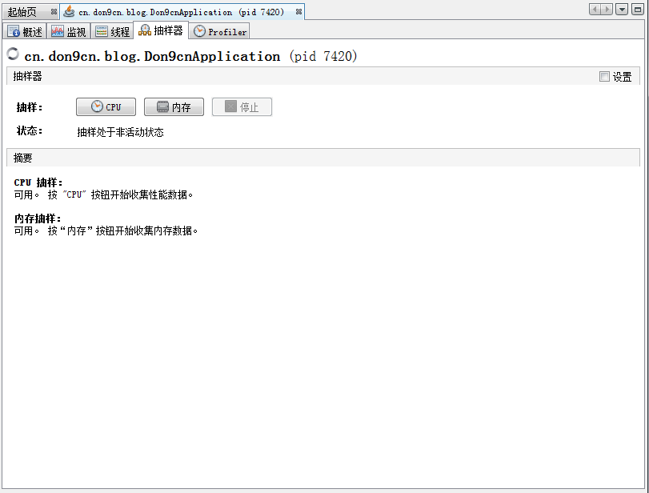
可以对当前cpu和内存的状态进行性能分析。 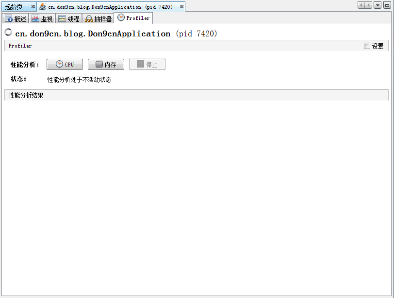
快速定位java应用中的锁竞争，常用的技巧是用jdk的jatack抓取线程转储信息，监控锁竞争。
jatack命令格式
xxxxxxxxxxjstack [ option ] pidjstack [ option ] executable corejstack [ option ] [server-id@]remote-hostname-or-IP
常用参数说明
executable Java executable from which the core dump was produced.(可能是产生core dump的java可执行程序)
core 将被打印信息的core dump文件
remote-hostname-or-IP 远程debug服务的主机名或ip
server-id 唯一id,假如一台主机上多个远程debug服务-F 当’jstack [-l] pid’没有相应的时候强制打印栈信息。
-l 长列表。打印关于锁的附加信息，例如属于java.util.concurrent的ownable synchronizers列表。
-m 打印java和native c/c++框架的所有栈信息，可以打印JVM的堆栈。
-h | -help 打印帮助信息。
pid 需要被打印配置信息的java进程id，可以用jps查询。
抓取日志示例
x"http-nio-8080-ClientPoller-0" #52 daemon prio=5 os_prio=0 tid=0x000000005f164000 nid=0x13a0 runnable [0x0000000061cee000]java.lang.Thread.State: RUNNABLEat sun.nio.ch.WindowsSelectorImpl$SubSelector.poll0(Native Method)at sun.nio.ch.WindowsSelectorImpl$SubSelector.poll(WindowsSelectorImpl.java:296)at sun.nio.ch.WindowsSelectorImpl$SubSelector.access$400(WindowsSelectorImpl.java:278)at sun.nio.ch.WindowsSelectorImpl.doSelect(WindowsSelectorImpl.java:159)at sun.nio.ch.SelectorImpl.lockAndDoSelect(SelectorImpl.java:86)- locked <0x00000000ad3b1d38> (a sun.nio.ch.Util$2)- locked <0x00000000ad3d56d8> (a java.util.Collections$UnmodifiableSet)- locked <0x00000000ad3ba000> (a sun.nio.ch.WindowsSelectorImpl)at sun.nio.ch.SelectorImpl.select(SelectorImpl.java:97)at org.apache.tomcat.util.net.NioEndpoint$Poller.run(NioEndpoint.java:787)at java.lang.Thread.run(Thread.java:745)Locked ownable synchronizers:- None"http-nio-8080-exec-10" #51 daemon prio=5 os_prio=0 tid=0x000000005f163000 nid=0x1de8 waiting on condition [0x0000000061ace000]java.lang.Thread.State: WAITING (parking)at sun.misc.Unsafe.park(Native Method)- parking to wait for <0x00000000ad4dbc58> (a java.util.concurrent.locks.AbstractQueuedSynchronizer$ConditionObject)at java.util.concurrent.locks.LockSupport.park(LockSupport.java:175)at java.util.concurrent.locks.AbstractQueuedSynchronizer$ConditionObject.await(AbstractQueuedSynchronizer.java:2039)at java.util.concurrent.LinkedBlockingQueue.take(LinkedBlockingQueue.java:442)at org.apache.tomcat.util.threads.TaskQueue.take(TaskQueue.java:103)at org.apache.tomcat.util.threads.TaskQueue.take(TaskQueue.java:31)at java.util.concurrent.ThreadPoolExecutor.getTask(ThreadPoolExecutor.java:1067)at java.util.concurrent.ThreadPoolExecutor.runWorker(ThreadPoolExecutor.java:1127)at java.util.concurrent.ThreadPoolExecutor$Worker.run(ThreadPoolExecutor.java:617)at org.apache.tomcat.util.threads.TaskThread$WrappingRunnable.run(TaskThread.java:61)at java.lang.Thread.run(Thread.java:745)Locked ownable synchronizers:- None"http-nio-8080-exec-9" #50 daemon prio=5 os_prio=0 tid=0x000000005f162800 nid=0x219c waiting on condition [0x000000006191e000]java.lang.Thread.State: WAITING (parking)at sun.misc.Unsafe.park(Native Method)- parking to wait for <0x00000000ad4dbc58> (a java.util.concurrent.locks.AbstractQueuedSynchronizer$ConditionObject)at java.util.concurrent.locks.LockSupport.park(LockSupport.java:175)at java.util.concurrent.locks.AbstractQueuedSynchronizer$ConditionObject.await(AbstractQueuedSynchronizer.java:2039)at java.util.concurrent.LinkedBlockingQueue.take(LinkedBlockingQueue.java:442)at org.apache.tomcat.util.threads.TaskQueue.take(TaskQueue.java:103)at org.apache.tomcat.util.threads.TaskQueue.take(TaskQueue.java:31)at java.util.concurrent.ThreadPoolExecutor.getTask(ThreadPoolExecutor.java:1067)at java.util.concurrent.ThreadPoolExecutor.runWorker(ThreadPoolExecutor.java:1127)at java.util.concurrent.ThreadPoolExecutor$Worker.run(ThreadPoolExecutor.java:617)at org.apache.tomcat.util.threads.TaskThread$WrappingRunnable.run(TaskThread.java:61)at java.lang.Thread.run(Thread.java:745)Locked ownable synchronizers:- None"http-nio-8080-exec-8" #49 daemon prio=5 os_prio=0 tid=0x000000005f161800 nid=0x202c waiting on condition [0x0000000060e0e000]java.lang.Thread.State: WAITING (parking)at sun.misc.Unsafe.park(Native Method)- parking to wait for <0x00000000ad4dbc58> (a java.util.concurrent.locks.AbstractQueuedSynchronizer$ConditionObject)at java.util.concurrent.locks.LockSupport.park(LockSupport.java:175)at java.util.concurrent.locks.AbstractQueuedSynchronizer$ConditionObject.await(AbstractQueuedSynchronizer.java:2039)at java.util.concurrent.LinkedBlockingQueue.take(LinkedBlockingQueue.java:442)at org.apache.tomcat.util.threads.TaskQueue.take(TaskQueue.java:103)at org.apache.tomcat.util.threads.TaskQueue.take(TaskQueue.java:31)at java.util.concurrent.ThreadPoolExecutor.getTask(ThreadPoolExecutor.java:1067)at java.util.concurrent.ThreadPoolExecutor.runWorker(ThreadPoolExecutor.java:1127)at java.util.concurrent.ThreadPoolExecutor$Worker.run(ThreadPoolExecutor.java:617)at org.apache.tomcat.util.threads.TaskThread$WrappingRunnable.run(TaskThread.java:61)at java.lang.Thread.run(Thread.java:745)Locked ownable synchronizers:- None
上面是一段jstack日志，可以看到很多这种格式waiting on condition [0x0000000060e0e000]的文本，说明线程正在等待获取某个锁，中括号中的一串标识就是锁地址。每个锁在jatack日志中的标识都是唯一的，如果多个线程在等待同一个标识，那么说明在竞争同一个锁。jstack对追踪锁竞争和查看锁竞争激烈程度十分有用，对分析死锁也很有用。